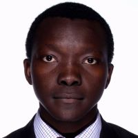

|  |
Josias Samadoulougou
Contact
MBA graduate with experience in financial services and data skills.
I have an excellent background in finance. Looking for an opportunity to apply my analytical skills. I speak French and English |
Skills
Analytical thinking, time management, attention to details, communication, team spirit
Portfolio Management, Financial analysis, Reporting, Equity research, ETF
Canadian Securities Course, 2021 CFA Level 2 candidate, Excel, R, Python, SQL, Tableau
| Python | ★★★★★ |
SQL | ★★★★★ |
| R programming | ★★★★★ |
Web development: HTML CSS JS | ★★★★★ |
Education & Training
DataCamp Courses: Tableau, 10/2020
- Data visualization, forecasting, mapping analysis, building dashboards and stories
DataCamp Courses : Certificate Quantitative analysis with R, 09/2020
- Time series analysis, ARIMA models, Logistic regression, Decision tree, visualization
- Exponential smoothing, Portfolio optimization/rebalancing, stress testing
Master of Business Administration, Business Administration, 05/2018
Université De Moncton - Moncton, NB
- Dean's List 2018, Graduated with 3.7 GPA
- Corporate and business strategy, Competitive analysis, Data analysis, project management
- SMEs advisory on strategy, marketing plan, HR plan
Master in Banking and Finance, Accounting and Finance, 07/2015
CESAG Business School - Dakar, Senegal
- Accounting, Financial statement analysis (Balance Sheet, Income statement…)
- Portfolio analysis : risk and return attribution, asset allocation
Experience
Administrator Financial Services -Revenue, 01/2018 to 03/2020
Vestcor Inc. - Fredericton, NB
- Input financial data and produce reports for each insurance program
A
- Reconcile account information and analyze discrepancies in total fund allocation
- Proactively provide problem solving assistance, effectively building lasting relationships
- Participate in interns training
- Compile data for board meeting presentations
- Compile and analyze large data sets for payments trackin
Research assistant, 06 /2017 to 12/2017
Université De Moncton - Faculté D'Administration - Moncton, NB
- Assist professor to conduct research
- Collaborate with research team on survey questions, data collection
- Evaluate over 50 potential participants (executive team)
Volunteering
- Tutoring for grade 2 and 3 students with College Frontiere, 2016
- Elected to President for Communauté Burkinabé du CESAG, 2013